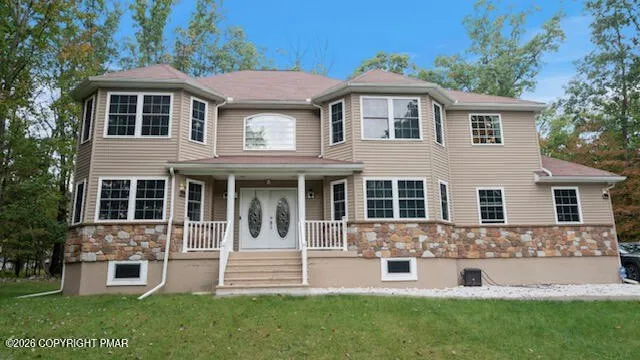
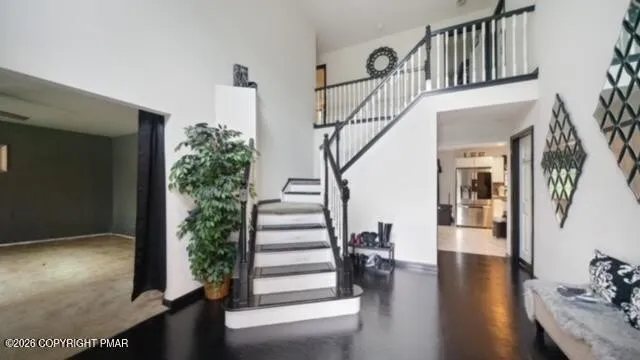
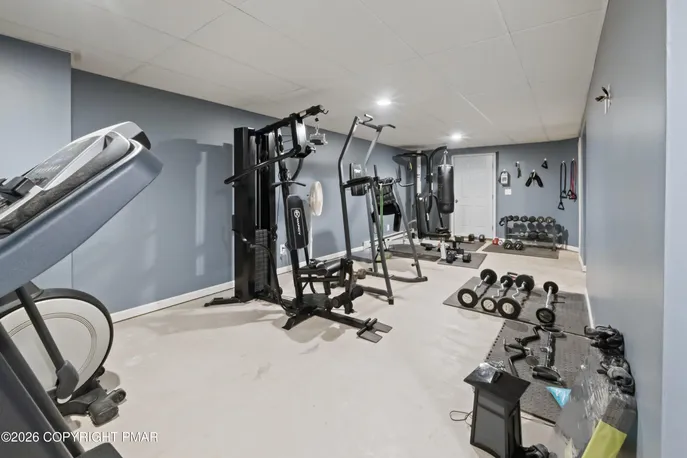

The weather
East Stroudsburg on the loop.
Mount Holly radar. The Poconos sit on this station. A showing is better when you can see what is coming over the ridge.
Live Storm Radar · Monroe County
Station KDIX

East Stroudsburg · 18302
$499,900
The lot
1.52 acres. Corner lot. Expansive grounds with room for a pool if a buyer wants one. Rear deck for the evenings. Finished two-car garage. Minutes to I-80 and the Delaware Water Gap without giving up privacy.

The house
Dramatic two-story foyer into formal living and dining. Gourmet-sized eat-in kitchen with center island and stainless appliances, opening to a breakfast nook and family room with fireplace. Upstairs, an oversized primary suite with a walk-in closet the size of a bedroom, double sinks, tile shower, and jetted tub. Partially finished basement with gym equipment included — needs flooring only.
Forced-air heat. Central air. Whole-house generator. One owner. As-is.

Already in place

The place
East Stroudsburg Area schools. Low association dues. Close enough to shops, restaurants, hiking, skiing, and water parks — far enough that the lot still feels like ground you own.
Before you become a local
There’s more to moving than square footage. Here is what to know about the ground under 237 Footprint Road.
Geography
While the postal address says East Stroudsburg, Footprint Road sits in Middle Smithfield Township—established in 1794, decades before Monroe County itself was formed.
Commuter Lore
In 1854, local landowner Robert Brown deeded railroad right-of-way for exactly one dollar—on the condition that passenger trains always stopped here. It helped establish the city link buyers still rely on today.
Moving Tip
The whole-house generator is already wired and in place. Tip for buyers moving from the city: winter mountain living is easier when backup power is already on the property.
The weather
Mount Holly radar. The Poconos sit on this station. A showing is better when you can see what is coming over the ridge.
Katherine Bennett, RE/MAX Crossroads. 815 Seven Bridge Road, East Stroudsburg.
Call 570-424-8850237 Footprint Road · East Stroudsburg · Middle Smithfield Township · MLS PM-144925 · Listed by Katherine Bennett, RE/MAX Crossroads. Concept page only — not an official brokerage campaign. Listing photos and rights remain with the listing office. Verified active at $499,900 as of October 7, 2026. Final public use controlled by the listing broker.